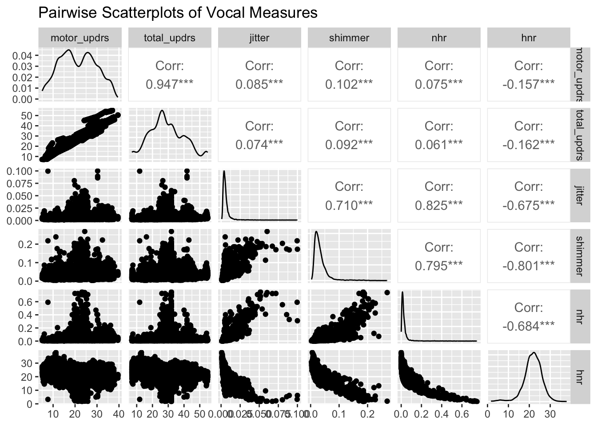
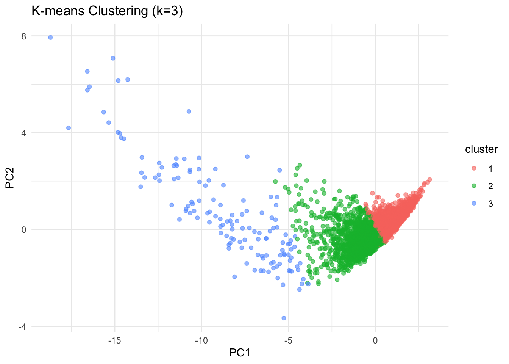

library(tidyverse)
library(tidymodels)
library(knitr)
library(GGally)Parkinson’s Telemonitoring
About this site
Introduction
This dataset is composed of a range of biomedical voice measurements from 42 people with early-stage Parkinson’s disease recruited to a six-month trial of a telemonitoring device for remote symptom progression monitoring. The dataset includes various acoustic features such as average vocal fundamental frequency, jitter, shimmer, and harmonic-to-noise ratio, as well as two clinical outcome scores: motor UPDRS (Unified Parkinson’s Disease Rating Scale) and total UPDRS, which are standardized measures used to assess the severity and progression of Parkinson’s symptoms. The primary goal of this analysis is to investigate how voice features relate to disease severity and to develop predictive models that estimate UPDRS scores based on these vocal biomarkers.
Data source
The dataset was created by Athanasios Tsanas (tsanasthanasis@gmail.com) and Max Little (littlem@physics.ox.ac.uk) of the University of Oxford, in collaboration with 10 medical centers in the US and Intel Corporation who developed the telemonitoring device to record the speech signals. The original study used a range of linear and nonlinear regression methods to predict the clinician’s Parkinson’s disease symptom score on the UPDRS scale.
http://archive.ics.uci.edu/ml/datasets/Parkinsons+Telemonitoring
Reference
A Tsanas, MA Little, PE McSharry, LO Ramig (2009)‘Accurate telemonitoring of Parkinson’s disease progression by non-invasive speech tests’, IEEE Transactions on Biomedical
Load the packages
Load dataset
data <- read.csv("Parkinsons-Telemonitoring-ucirvine.csv")
# Turn the character "false"/"true" into a factor with labels
data <- data %>% mutate(gender = factor(sex, levels = c("false", "true"), labels = c("Female", "Male") ))1. Exploratory Data Analysis (EDA)
1.1 Summary statistics
summary(data) subject age sex test_time
Min. : 1.00 Min. :36.0 Length:5875 Min. : -4.263
1st Qu.:10.00 1st Qu.:58.0 Class :character 1st Qu.: 46.847
Median :22.00 Median :65.0 Mode :character Median : 91.523
Mean :21.49 Mean :64.8 Mean : 92.864
3rd Qu.:33.00 3rd Qu.:72.0 3rd Qu.:138.445
Max. :42.00 Max. :85.0 Max. :215.490
motor_updrs total_updrs jitter jitter_abs
Min. : 5.038 Min. : 7.00 Min. :0.000830 Min. :2.250e-06
1st Qu.:15.000 1st Qu.:21.37 1st Qu.:0.003580 1st Qu.:2.244e-05
Median :20.871 Median :27.58 Median :0.004900 Median :3.453e-05
Mean :21.296 Mean :29.02 Mean :0.006154 Mean :4.403e-05
3rd Qu.:27.596 3rd Qu.:36.40 3rd Qu.:0.006800 3rd Qu.:5.333e-05
Max. :39.511 Max. :54.99 Max. :0.099990 Max. :4.456e-04
jitter_rap jitter_ppq5 jitter_ddp shimmer
Min. :0.000330 Min. :0.000430 Min. :0.000980 Min. :0.00306
1st Qu.:0.001580 1st Qu.:0.001820 1st Qu.:0.004730 1st Qu.:0.01912
Median :0.002250 Median :0.002490 Median :0.006750 Median :0.02751
Mean :0.002987 Mean :0.003277 Mean :0.008962 Mean :0.03404
3rd Qu.:0.003290 3rd Qu.:0.003460 3rd Qu.:0.009870 3rd Qu.:0.03975
Max. :0.057540 Max. :0.069560 Max. :0.172630 Max. :0.26863
shimmer_db shimmer_apq3 shimmer_apq5 shimmer_apq11
Min. :0.026 Min. :0.00161 Min. :0.00194 Min. :0.00249
1st Qu.:0.175 1st Qu.:0.00928 1st Qu.:0.01079 1st Qu.:0.01566
Median :0.253 Median :0.01370 Median :0.01594 Median :0.02271
Mean :0.311 Mean :0.01716 Mean :0.02014 Mean :0.02748
3rd Qu.:0.365 3rd Qu.:0.02057 3rd Qu.:0.02375 3rd Qu.:0.03272
Max. :2.107 Max. :0.16267 Max. :0.16702 Max. :0.27546
shimmer_dda nhr hnr rpde
Min. :0.00484 Min. :0.000286 Min. : 1.659 Min. :0.1510
1st Qu.:0.02783 1st Qu.:0.010955 1st Qu.:19.406 1st Qu.:0.4698
Median :0.04111 Median :0.018448 Median :21.920 Median :0.5423
Mean :0.05147 Mean :0.032120 Mean :21.679 Mean :0.5415
3rd Qu.:0.06173 3rd Qu.:0.031463 3rd Qu.:24.444 3rd Qu.:0.6140
Max. :0.48802 Max. :0.748260 Max. :37.875 Max. :0.9661
dfa ppe gender
Min. :0.5140 Min. :0.02198 Female:4008
1st Qu.:0.5962 1st Qu.:0.15634 Male :1867
Median :0.6436 Median :0.20550
Mean :0.6532 Mean :0.21959
3rd Qu.:0.7113 3rd Qu.:0.26449
Max. :0.8656 Max. :0.73173 1.1.1 Summarize by group
# Compute count, mean & SD of key variables by gender
summary_by_gender <- data %>%
group_by(gender) %>%
summarise(
n = n(), # sample size
age_mean = mean(age, na.rm = TRUE), # average age
age_sd = sd(age, na.rm = TRUE), # age SD
total_updrs_mean = mean(total_updrs, na.rm = TRUE), # avg total UPDRS
total_updrs_sd = sd(total_updrs, na.rm = TRUE), # SD total UPDRS
motor_updrs_mean = mean(motor_updrs, na.rm = TRUE), # avg motor UPDRS
motor_updrs_sd = sd(motor_updrs, na.rm = TRUE)
)
# Render the summary_by_gender as a markdown table
summary_by_gender %>% kable(caption = "Table 1. Summary Statistics of Age and UPDRS by Gender")| gender | n | age_mean | age_sd | total_updrs_mean | total_updrs_sd | motor_updrs_mean | motor_updrs_sd |
|---|---|---|---|---|---|---|---|
| Female | 4008 | 65.05539 | 7.84549 | 29.72406 | 11.004499 | 21.46935 | 7.891659 |
| Male | 1867 | 64.26727 | 10.60045 | 27.50523 | 9.849771 | 20.92458 | 8.607728 |
1.2 Visualize distributions & outliers of total UPDRS
1.2.1 Histogram of total UPDRS
ggplot(data, aes(x = total_updrs)) +
geom_histogram(binwidth = 1, fill = "darkslategray3", color = "black") +
labs(title = "Distribution of Total UPDRS", x = "Total UPDRS", y = "Count") +
theme(axis.title.x = element_text(size = 16),
axis.title.y = element_text(size = 16),
axis.text.x = element_text(size = 12),
axis.text.y = element_text(size = 12),
legend.position = "none")
1.2.2 Density plot of total UPDRS by gender
ggplot(data, aes(x = total_updrs, fill = gender)) +
geom_density(alpha = 0.4) +
labs(
title = "Density of Total UPDRS by Gender",
x = "Total UPDRS",
y = "Density")
1.2.3 Violin & boxplot of motor UPDRS by gender
ggplot(data, aes(x = gender, y = motor_updrs, fill = gender)) +
geom_violin(trim = FALSE, color = "black") +
geom_boxplot(width = 0.1, outlier.shape = NA,
color = "black", size = 1.2) +
scale_fill_manual(values = c("Female" = "rosybrown2", "Male" = "darkslategray3")) +
labs( title = "Motor UPDRS Distribution by Gender",
x = "Gender",
y = "Motor UPDRS") +
theme(axis.title.x = element_text(size = 16),
axis.title.y = element_text(size = 16),
axis.text.x = element_text(size = 12),
axis.text.y = element_text(size = 12),
legend.position = "none")
1.3 Boxplot for age vs. total UPDRS
ggplot(data, aes(x=factor(age), y=total_updrs)) +
geom_boxplot(fill='lightgreen') +
labs(title='Age vs. Total UPDRS', x='Age', y='Total UPDRS') +
theme(axis.text.x = element_text(angle=0), )1.4 Scatterplot matrix of key measures
data %>%
select(motor_updrs, total_updrs, jitter, shimmer, nhr, hnr) %>%
ggpairs(title = "Pairwise Scatterplots of Vocal Measures")
2. Correlation and Regression Analysis
2.1 Correlation matrix
num_vars <- data %>%
select(age, motor_updrs, total_updrs, jitter, shimmer, nhr, hnr)
corr_mat <- cor(num_vars, use = "pairwise.complete.obs")
library(ggcorrplot)
ggcorrplot(
corr_mat,
hc.order = TRUE, # cluster vars
type = "lower", # lower triangle
lab = TRUE, # show values
lab_size = 3,
tl.cex = 12, # axis‐label size
tl.srt = 45, # rotate labels
tl.col = "black", # label colour
outline.col= "gray70",
colors = c("red", "white", "steelblue"),
ggtheme = theme_minimal(base_size = 14)) +
labs(title = "Correlogram") +
theme(axis.text = element_text(color = "black"))2.2 Simple linear regression
lm1 <- lm(total_updrs ~ jitter + shimmer, data = data)
summary(lm1)
Call:
lm(formula = total_updrs ~ jitter + shimmer, data = data)
Residuals:
Min 1Q Median 3Q Max
-26.365 -7.332 -1.519 7.553 26.337
Coefficients:
Estimate Std. Error t value Pr(>|t|)
(Intercept) 27.6897 0.2321 119.312 < 2e-16 ***
jitter 33.9171 35.0935 0.966 0.334
shimmer 32.9216 7.6397 4.309 1.66e-05 ***
---
Signif. codes: 0 '***' 0.001 '**' 0.01 '*' 0.05 '.' 0.1 ' ' 1
Residual standard error: 10.66 on 5872 degrees of freedom
Multiple R-squared: 0.008648, Adjusted R-squared: 0.00831
F-statistic: 25.61 on 2 and 5872 DF, p-value: 8.424e-122.3 Multiple regression including age & gender
lm2 <- lm(total_updrs ~ jitter + shimmer + age + gender, data = data)
summary(lm2)
Call:
lm(formula = total_updrs ~ jitter + shimmer + age + gender, data = data)
Residuals:
Min 1Q Median 3Q Max
-24.449 -7.660 -1.337 7.464 24.782
Coefficients:
Estimate Std. Error t value Pr(>|t|)
(Intercept) 4.88057 0.99302 4.915 9.12e-07 ***
jitter 94.01670 33.36093 2.818 0.00485 **
shimmer 13.07136 7.30299 1.790 0.07353 .
age 0.36664 0.01508 24.319 < 2e-16 ***
genderMale -2.03085 0.28395 -7.152 9.59e-13 ***
---
Signif. codes: 0 '***' 0.001 '**' 0.01 '*' 0.05 '.' 0.1 ' ' 1
Residual standard error: 10.1 on 5870 degrees of freedom
Multiple R-squared: 0.1089, Adjusted R-squared: 0.1083
F-statistic: 179.3 on 4 and 5870 DF, p-value: < 2.2e-163. Logistic Regression
# Categorize UPDRS severity (example: mild < 20, moderate = 20-30, severe > 30)
data$severity <- cut(data$total_updrs, breaks=c(-Inf, 20, 30, Inf), labels=c("Mild", "Moderate", "Severe"))
# Logistic regression predicting severe vs non-severe
data$severe_binary <- ifelse(data$severity=="Severe", 1, 0)
# Fit logistic regression
logit_model <- glm(severe_binary ~ jitter + shimmer + age + sex, data=data, family=binomial())
summary(logit_model)
Call:
glm(formula = severe_binary ~ jitter + shimmer + age + sex, family = binomial(),
data = data)
Coefficients:
Estimate Std. Error z value Pr(>|z|)
(Intercept) -2.324343 0.209643 -11.087 < 2e-16 ***
jitter -0.772055 6.723934 -0.115 0.909
shimmer 6.773637 1.481060 4.574 4.80e-06 ***
age 0.029939 0.003166 9.456 < 2e-16 ***
sextrue -0.407588 0.058676 -6.946 3.75e-12 ***
---
Signif. codes: 0 '***' 0.001 '**' 0.01 '*' 0.05 '.' 0.1 ' ' 1
(Dispersion parameter for binomial family taken to be 1)
Null deviance: 8033.3 on 5874 degrees of freedom
Residual deviance: 7839.7 on 5870 degrees of freedom
AIC: 7849.7
Number of Fisher Scoring iterations: 4# ROC Curve analysis
library(pROC)Type 'citation("pROC")' for a citation.
Attaching package: 'pROC'The following objects are masked from 'package:stats':
cov, smooth, varroc_obj <- roc(data$severe_binary, fitted(logit_model))Setting levels: control = 0, case = 1Setting direction: controls < casesplot(roc_obj, col="darkslategray3", main="ROC Curve for Severe UPDRS Classification")auc(roc_obj) # Area Under the CurveArea under the curve: 0.58924. Time-Series Analysis / Linear Mixed Models (LMM)
# Load necessary library
library(lme4)Loading required package: Matrix
Attaching package: 'Matrix'The following objects are masked from 'package:tidyr':
expand, pack, unpack# Fit Linear Mixed Model (LMM) accounting for repeated measures per subject
lmm <- lmer(total_updrs ~ test_time + age + gender + (1 | subject), data=data)
summary(lmm)Linear mixed model fit by REML ['lmerMod']
Formula: total_updrs ~ test_time + age + gender + (1 | subject)
Data: data
REML criterion at convergence: 28154.1
Scaled residuals:
Min 1Q Median 3Q Max
-4.1463 -0.4908 0.0156 0.5700 3.5208
Random effects:
Groups Name Variance Std.Dev.
subject (Intercept) 101.105 10.055
Residual 6.679 2.584
Number of obs: 5875, groups: subject, 42
Fixed effects:
Estimate Std. Error t value
(Intercept) 3.7803276 11.2054109 0.337
test_time 0.0187618 0.0006388 29.371
age 0.3687841 0.1703585 2.165
genderMale -2.1952752 3.2989902 -0.665
Correlation of Fixed Effects:
(Intr) tst_tm age
test_time -0.005
age -0.985 0.000
genderMale -0.161 0.000 0.065# Check assumptions
diag_df <- data.frame(fitted = fitted(lmm), resid = resid(lmm))
ggplot(diag_df, aes(x = fitted, y = resid)) +
geom_point( shape = 21,color = "black", fill = "skyblue", size = 3, stroke = 0.5, alpha = 0.2 ) +
geom_smooth(method = "loess", se = FALSE,color = "darkred", linetype = "dashed") +
geom_hline(yintercept = 0, linetype = "dotted", color = "gray40") +
labs( title = "LMM Diagnostics: Residuals vs Fitted", x = "Fitted Values", y = "Residuals") +
theme_classic(base_size = 8) +
theme(panel.grid.major = element_blank(),
panel.grid.minor = element_blank(),
plot.title = element_text(face = "bold", size = 16),
axis.title = element_text(size = 14),
axis.text = element_text(size = 12))`geom_smooth()` using formula = 'y ~ x'
hist(resid(lmm), breaks=30, col = "plum", border = "black",main="Residual Histogram", xlab="Residuals")
5. Cluster Analysis
# Normalize features
library(scales)
data_scaled <- data %>%
select(jitter, shimmer, nhr, hnr) %>%
mutate_all(rescale)
# k-means clustering (k=3 example)
set.seed(123)
kmeans_model <- kmeans(data_scaled, centers=3, nstart=25)
# Append clusters to original data
data$cluster <- factor(kmeans_model$cluster)
# Visualize clusters (using PCA for plotting)
pca_res <- prcomp(data_scaled, scale=TRUE)
pca_data <- data.frame(pca_res$x, cluster=data$cluster)
ggplot(pca_data, aes(PC1, PC2, color=cluster)) +
geom_point(alpha=0.6) +
labs(title="K-means Clustering (k=3)", x="PC1", y="PC2") +
theme_minimal()6. Principal Component Analysis (PCA)
# PCA on selected numeric variables
pca <- prcomp(data[, c("jitter", "shimmer", "nhr", "hnr", "rpde", "dfa", "ppe")], scale=TRUE)
# Summary of PCA
summary(pca)Importance of components:
PC1 PC2 PC3 PC4 PC5 PC6 PC7
Standard deviation 2.082 1.0544 0.82576 0.59845 0.53083 0.36138 0.32092
Proportion of Variance 0.619 0.1588 0.09741 0.05116 0.04025 0.01866 0.01471
Cumulative Proportion 0.619 0.7778 0.87521 0.92638 0.96663 0.98529 1.00000# Scree plot to visualize variance explained
library(factoextra)Welcome! Want to learn more? See two factoextra-related books at https://goo.gl/ve3WBafviz_eig(
pca,
addlabels = TRUE, # show percent values on bars
ylim = c(0, 70), # y‐axis limits (adjust as needed)
barfill = "steelblue", # fill color for bars
barcolor = "black", # border color
linecolor = "firebrick", # color of cumulative line
pointshape = 19, # shape of points on cumulative line
pointsize = 3, # size of those points
labelsize = 8 # size of the percent‐labels
) +
labs(
title = "Scree Plot",
subtitle = "Principal components ordered by descending variance",
x = "Principal Component",
y = "Percentage of Variance"
) +
theme_minimal(base_size = 14) +
theme(
plot.title = element_text(face = "bold"),
plot.subtitle = element_text(color = "gray0"),
panel.grid = element_blank(),
axis.text.x = element_text(size = 12),
axis.text.y = element_text(size = 12) )
# PCA biplot
fviz_pca_biplot(
pca,
label = "var", # show only variable (arrow) labels
repel = TRUE, # avoid text overlap
geom.ind = "point", # draw points for observations
pointshape = 21,
pointsize = 2.5,
alpha.ind = 0.3,
fill.ind = data$gender, # use your gender factor
col.ind = "black", # point border
palette = c("salmon", "skyblue"),
col.var = "black", # arrow color
col.var.dim = 1, # arrow color by dimension?
addEllipses = TRUE, # concentration ellipses by group
ellipse.level= 0.68, # 68% confidence ellipse
legend.title = list(fill = "Gender")
) +
labs(
title = "PCA Biplot",
subtitle = "Observations colored by Gender; Variables as arrows"
) +
theme_minimal(base_size = 14) +
theme(
plot.title = element_text(face = "bold"),
plot.subtitle = element_text(color = "gray40"),
legend.position = "right"
)